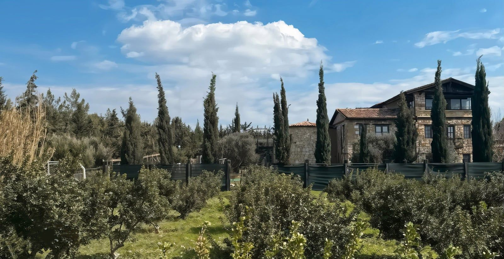

Семь дней.
Семь закладок.
Каждое утро — одна закладка: тема, мысль и вопрос дня. Здесь вся неделя: расписание и варианты на выбор, сколько что занимает, рынок дня, карта движения и где поесть.
Один взгляд на семь дней
Полоски показывают нагрузку дня. Погода на 13–15 ноября: максимум и минимум температуры за сутки. Нажмите на день, чтобы перейти к его блоку.
Проверено (Чешме, UTC+3). В сводке есть максимум, минимум и вероятность дождя; ветер и облачность по дням в ней не указаны, поэтому не показаны. Сегодня днём облачно, около 20°. За 9–11 ноября архивные данные не проверены. Проверить прогноз в AccuWeather. Перед выходом сверяйте дождь и ветер.
Расписание и варианты
В каждом дне 2–4 сценария. Вкладка меняет и список, и шкалу дня. Рекомендованный сценарий открыт по умолчанию. Расстояния от виллы оценены по карте, время в пути — тоже.
Где базар в какой день
Расписание по данным муниципалитета Чешме, для Урлы — flypgs. Лучше идти до полудня, к обеду ряды пустеют. Часы конкретного рынка уточняем у хозяев фермы.
Маршруты в телефоне
Каждая ссылка ведёт на готовый трек или точку старта. Откройте её на телефоне до выхода, пока есть связь. Весь маршрут дня на машине — кнопка «Весь маршрут дня в Google Maps» в блоке дня.
Семь закладок
Те самые закладки из вашего комплекта. Каждое утро — одна: тема, мысль и вопрос дня. Нажмите на закладку, чтобы открыть её день.
Что взять и что важно знать
Взять с собой
- Треккинговые ботинки и лёгкая обувь для дома
- Рюкзак 20–25 л, 2,5 л воды на среду
- Ветровка, флис, одна яркая вещь
- Налобный фонарь
- Купальник и тапочки для бани
- Наличные лиры мелкими для рынков
Безопасность
- 112 — единый экстренный номер
- Больница Чешме: Boyalık, дорога на Ылыджу, ≈15 мин
- Охота: ср, сб, вс; во вт только кабан. Там, где охотятся, — тропа и яркая одежда
- Собаки пастухов: не бежать, не бросать камни, спокойно уйти в сторону
- Все переходы заканчиваем к 17:30
Ритм каждого дня
- Утро: тело и тишина
- День: природа или одна поездка
- Закат: одно слово дня
- Вечер: общий стол без телефонов и круг